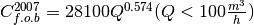

LiquidsSplitCentrifuge¶
-
class
biosteam.units.LiquidsSplitCentrifuge(ID='', ins=None, outs=(), thermo=None, *, split, order=None)[source]¶ Create a liquids centrifuge simulated by component splits.
- Parameters
ins (stream) – Inlet fluid.
outs (stream sequence) –
[0] ‘liquid’ phase fluid
[1] ‘LIQUID’ phase fluid
split (Should be one of the following) –
[float] The fraction of net feed in the 0th outlet stream
[array_like] Componentwise split of feed to 0th outlet stream
[dict] ID-split pairs of feed to 0th outlet stream
order=None (Iterable[str], defaults to biosteam.settings.chemicals.IDs) – Chemical order of split.
Notes
The f.o.b purchase cost is given by 1:

References
- 1
Apostolakou, A. A.; Kookos, I. K.; Marazioti, C.; Angelopoulos, K. C. Techno-Economic Analysis of a Biodiesel Production Process from Vegetable Oils. Fuel Process. Technol. 2009, 90, 1023−1031
-
property
split¶ [Array] Componentwise split of feed to 0th outlet stream.